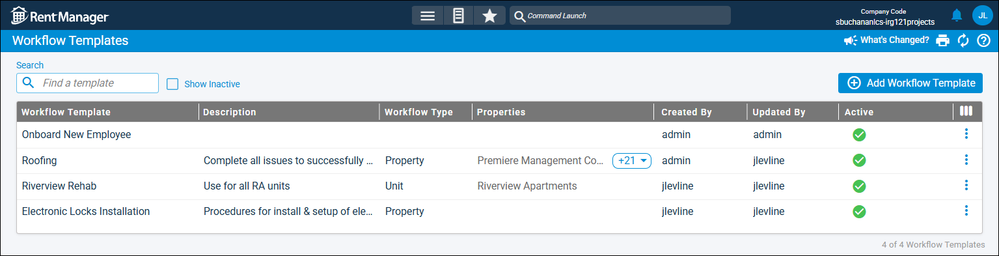

Source: https://rmxhelp.rentmanager.com/Topics/Express/KB/Workflow-Projects-Templates.htm
Workflow Projects and Templates
Workflow projects in Rent Manager provide you with several tools to organize, track, and complete major goals your company needs to accomplish. The toolkit for workflow projects contains three interconnected tools: workflow projects themselves, workflow templates, and workflow boards. Workflow projects organize groups of service issues and tasks that must be completed to finish your company's projects. Workflow templates enable you to create preconfigured workflow project templates that save you setup time and ensure consistency across similar workflow projects. Workflow boards provide a visual representation of the progress of your workflow projects in a Kanban-style board. These three tools together help you improve the organization and effectiveness of your service management team.
Workflow Projects

Workflow projects are used to organize and coordinate your company to accomplish a major goal. Each workflow project is composed of stages, which are distinct phases of the project. Each stage contains steps (service issues and/or tasks), and as each step is closed, the project progresses toward completion. Additionally, you can require that steps be completed in order to ensure the workflow project is accomplished in the correct sequence. Workflow projects can be created from scratch or generated from your premade workflow templates, ensuring maximum flexibility for your company's needs. For more information, refer to Add a Workflow Project.
Workflow Templates

If you have a workflow project that involves completing the same steps in the same order on a regular basis, you can build and preprogram a workflow template to streamline the process. This process is almost identical to creating a workflow project, in that the template consists of stages and steps that describe the work that must be accomplished to complete the overall goal. When a workflow project is created from a workflow template, it inherits these stages, steps, and settings established in the template. If the template setting Enable visual board view is selected, you can also access the workflow board to easily track the progress of workflow projects generated from the template. Consider utilizing workflow templates to reduce setup time and ensure consistency across your workflow projects. For more information, refer to Add a Workflow Template.
Workflow Boards

Workflow boards provide a panoramic view of your open workflow projects, enabling you to easily identify their current status, manage their steps, and track their progress toward completion. Each workflow board corresponds to a workflow template, and only workflow projects generated from those templates display on a board. The stages in a workflow template display as columns on the board, and each workflow project displays as a card in the column. As workflow projects progress through stages, their cards move from one column to the next. Once the workflow project is complete, it is removed from the workflow board. Workflow boards provide both managers and team members with a useful visual tool that helps them stay up to date on workflow projects and ensure they are completed on time. For more information, refer to Workflow Boards (Page).